Saiu recentemente no site da revista exame, uma matéria sobre 50 motivos para você prestar atenção nos drones. Quem acessou a matéria, viu que as imagens e textos não foram bem posicionados, e ficou um pouco ruim de ler. Então resolvi colocar todas as imagens e textos aqui um em baixo do outro, o que facilita muito a leitura.
Eu concordei bastante com a matéria da revista exame… Está crescendo cada vez mais dentro do nosso hobby… Infelizmente algumas pessoas vem usando para o mau, como esse caso recente drone que invadiu uma prisão e foi derrubado pelos guardas. (veja a reportagem aqui).
Vamos torcer para que a regulamentação da Anac saia logo para que possamos curtir nosso hobby com segurança e dentro da lei 
Quem quiser pode ler a publicação original da revista exame em:
http://exame.abril.com.br/tecnologia/noticias/50-motivos-para-voce-prestar-mais-atencao-aos-drones
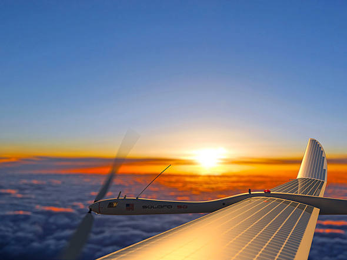
Eles voam
São Paulo – Uma pesquisa revelou que 80% dos brasileiros acreditam que drones podem ajudar a sociedade. O número mostra a popularidade dos robôs voadores no país – antes mesmo de terem uma regulamentação própria. A seguir, descubra 50 razões para você ficar mais atento aos drones – que são uma das tendências mais fortes para o futuro na área de tecnologia.
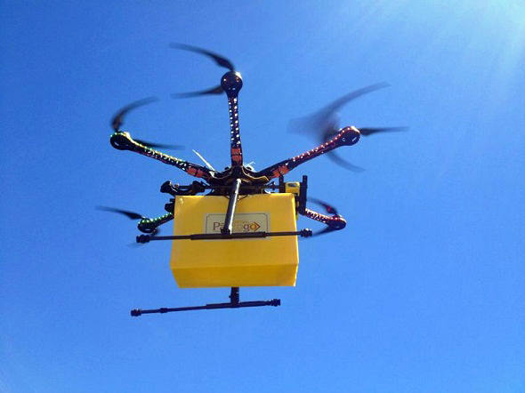
Eles entregam pãezinhos
A rede paulista de padarias Pão to Go vem testando em São Carlos (SP) um sistema de entregas baseado aeronaves elétricas não-tripuladas capaz de atender num raio de 1 quilômetro em cerca de 5 minutos.
Eles consertam aviões
A easyJet, companhia aérea do Reino Unido, anunciou recentemente que planeja usar drones avaliados em 25 mil dólares na revisão e checagem de sua frota de aviões – reduzindo assim o tempo gasto com estes procedimentos.
Eles encontram cativeiros
O governo americano afirmou que poderia usar aviões não tripulados nas operações de buscas a 200 meninas sequestradas na Nigéria pelo grupo terrorista islâmico Boko Haram em 14 de abril.
Eles viralizam na internet
Publicado em 16 de abril, um vídeo mostrando a hilária queda do AR4 Light Ray (drone comprado Marinha Portuguesa) na Base Naval de Lisboa foi assistido mais de 1,3 milhão de vezes no YouTube.
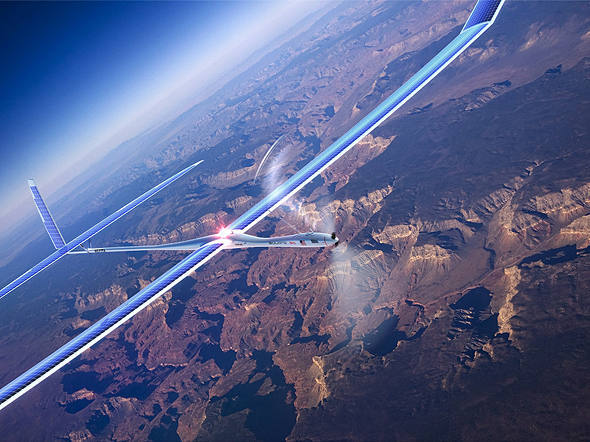
Eles expandem a internet
O Google anunciou recentemente a compra da Titan Aerospace. Fundada em 2012, a empresa desenvolve drones que deverão ser usados pelo Google no Loon, projeto que visa levar a internet aos pontos mais afastados do planeta.
Eles invadem presídios
Uma revista realizada no começo de abril Centro de Detenção Penitenciária (CDP) de São José dos Campos (SP) localizou celulares e drogas que estariam sendo lançados no presídio por drones pilotados por traficantes do lado de fora.
Eles estimulam a mineração
Gigante da mineração, a Rio Tinto planeja usar drones para monitorar estoques, rastrear equipamentos e outras funções em suas áreas de exploração ao redor do mundo. Segundo a empresa, isso reduziria custos e aceleraria a produção.
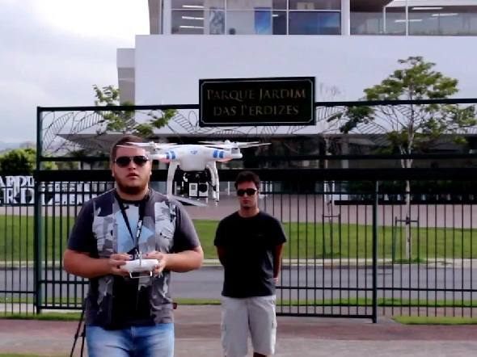
Eles acompanham obras
Um drone Phantom 2 tem sido usado pela construtora Tecnisa para fazer fotos e gravar pequenos vídeos em 4K retratando o andamento das obras do Jardim das Perdizes, empreendimento da empresa na zona oeste de São Paulo.
Eles espionam países
Em abril, autoridades sul-coreanas comunicaram que dois drones equipados com câmeras fotográficas foram encontrados próximo à fronteira do país. As aeronaves teriam sido enviadas pela Coreia do Norte em missão de espionagem.
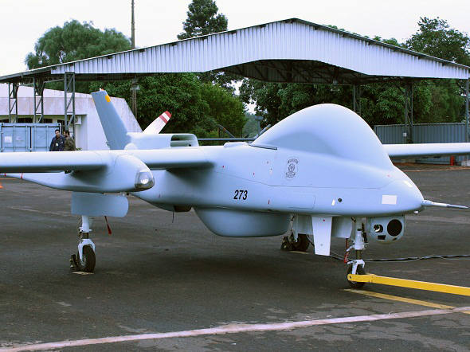
Eles combatem o crime
Líder da facção criminosa carioca Terceiro Comando, o traficante Menor P foi preso em março após investigações que contaram com a ajuda de um drone da Polícia Federal. O órgão planeja usar a nova arma durante a Copa do Mundo.
Eles localizam aviões
Misto de drone e satélite, o StratoBus é um projeto da empresa europeia Thales Alenia Space. Capaz de captar imagens voando a 20 km de altura, ele poderia ajudar na localização de aviões desaparecidos – como o Boeing 777 da Malaysia Airlines.
Eles transportam tropas
Um projeto do governo americano prevê o desenvolvimento de drones para transporte de tropas e cargas em situações de guerra. Por semana, postos de combate consomem aproximadamente 45 toneladas de suprimentos e aeronaves não tripuladas poderiam suprir esta demanda.
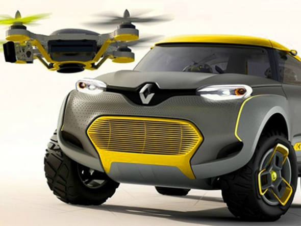
Eles ajudam motoristas
Projetado pela Renault, o Kwid é um carro conceito pensado para ter um drone como copiloto. Disparado a partir de uma base de lançamento no próprio veículo, o quadricóptero ajuda o motorista a saber como está o trânsito e pode ser controlado por meio de um tablet.
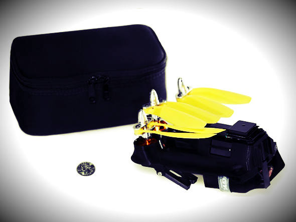
Eles filmam e fotografam
Pesando 450 gramas, o AirDroid é dobrável e cabe numa bolsinha. Com autonomia de vôo de 20 minutos e preço em torno de mil reais, o drone é capaz de fazer filmagens e fotos aéreas. Na internet, um financiamento coletivo faturou 320 mil dólares em menos de 20 dias.

Eles lêem retinas
Em breve, documentos como licenças de motoristas serão entregues por drones nos Emirados Árabes Unidos. Em fase de testes, o protótipo que fará as entregas tem 45 centímetros de largura e conta com leitor capaz de identificar o destinatário por meio da leitura da retina.
Eles voam sobre as ondas
No Havaí, o fotógrafo Eric Sterman usou um drone com uma câmera GoPro acoplada para filmar surfistas no Banzai Pipeline. O local abriga algumas das maiores e mais perigosas ondas do mundo. Em uma semana, as imagens filmadas pela aeronave alcançaram cerca de 300 visualizações.
Eles filmam o carnaval
Em 2014, um dos desfiles do Cordão do Boitatá (bloco carnavalesco carioca) contou com a presença de um folião ilustre: um drone. Filmada do alto, a folia na região da Rua do Mercado, no centro do Rio, deu origem a um vídeo publicado no Vimeo.
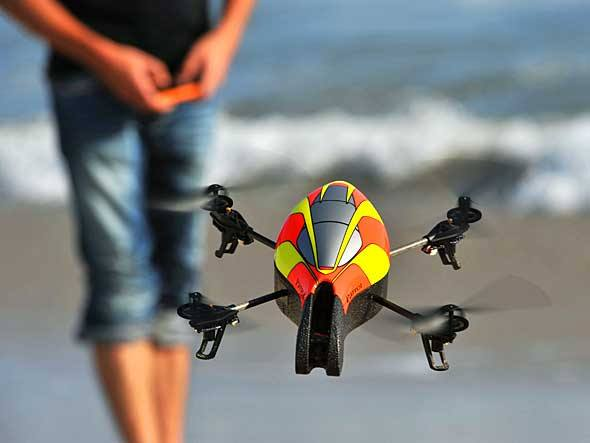
Eles são para brincar
Durante o Salão Internacional de Eletrônica de Consumo, realizado em janeiro em Las Vegas, a Parrot apresentou um mini-drone voltado para adolescentes. Com quatro hélices de plástico, a aeronave foi desenvolvida “para brincar”.
Eles matam
Dois membros da Al Qaeda foram mortos durante bombardeio promovido por drones na província de Hadramut, no Iêmen, em janeiro. O uso militar das aeronaves não-tripuladas pelos EUA tem sido alvo de críticas na internet. A campanha#BringBackYourDrones é um exemplo.
Eles se zumbificam
Um kit criado pelo hacker Sammy Kamkar é capaz de zumbificar drones. Batizado de SkyJack, o kit é composto por uma aeronave não-tripulada, um software e outros componentes. Nas palavras de seu criador, a ferramenta serve para criar um “exército de drones zumbis”.
Eles ajudam a ONU
Desde dezembro, a ONU vem usando drones em suas missões de paz. A estreia foi feita no República Democrática do Congo, onde aeronaves do tipo estão sendo usadas para vigiar fronteiras e monitorar a ação de grupos armados que atuam na prvíncia de Kivu Norte.
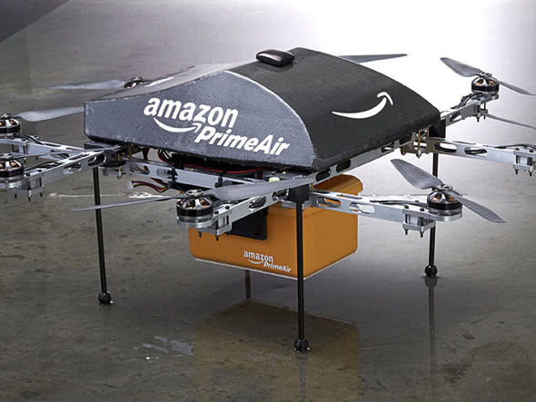
Eles fazem entregas
A Amazon pretende lançar até 2015 um serviço de entregas baseado em drones. Batizado de Prime Air, ele cumpriria a tarefa em até 30 minutos e foi alvo de chacota por parte do rival Groupon – que, em resposta, anunciou que passaria a usar catapultas para fazer entregas.
Eles enganam radares
Em chinês, Lijian quer dizer “espada afiada”. Esse foi o nome escolhido pela autoridades daquele país para um drone capaz de não ser detectado por radares que foi testado em novembro. Naquela ocasião, a aeronave voou por 20 minutos.
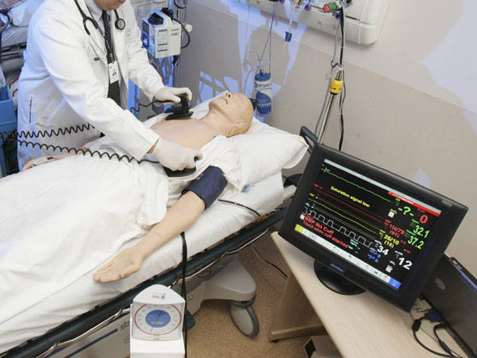
Eles salvam vidas
Um sistema criado pela organização alemã Definetz prevê o uso de drones em casos de emergência médica. Capazes de voar a até 70 km/h e atuar em raio de ação de 15 km, aeronaves não-tripuladas avaliadas em 20 mil euros com cerca de 5 kg levariam desfibriladores a vítimas de infarte.
Eles pedem em casamento
Um vídeo publicado no YouTube mostra um pedido de casamento inusitado. O caso aconteceu São Francisco, nos EUA. No filme, um drone se aproxima de uma mulher grávida que tira fotos com o namorado. Na aeronave, está a aliança – que ela, é claro, aceita.
Eles levam livros
Uma parceria entre a starutp Flirtey e a livraria virtual Zookal deu uma nova função aos drones na Austrália. Por lá, as aeronaves estão sendo usadas para entregas de livros – que, segundo as empresas, chegam às mãos dos clientes em até três minutos.
Eles ajudam arqueólogos
Luis Jaime Castillo, arqueólogo da Pontíficia Universidade Católica do Peru usa quatro drones em sua pesquisa em ruínas localizadas na costa norte do país. Feitas de fibra de carbono e madeira leve, as aeronaves captam imagens úteis aos pesquisadores.
Eles analisam plantas
Hildo Loayza é físico e trabalha no Centro Internacional da Batata – localizado em Lima, no Peru. Por lá, ele e outros pesquisadores tem usado drones equipados com câmeras para avaliar a saúde de plantas e o crescimento do cultivo.
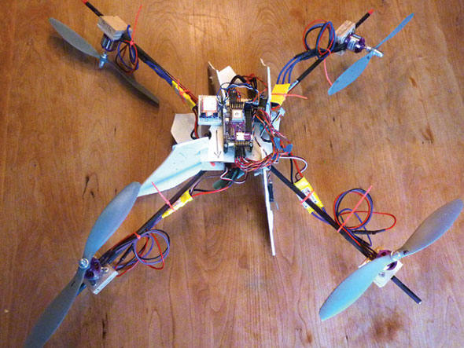
Eles vigiam filhos
Editor do site IEEE Spectrum e pai de um menino em idade escolar, Paul Wallich resolveu montar um drone para acompanhar o filho até a escola. Para isso, ele criou uma aeronave na qual acopla seu próprio smartphone – que transmite imagens da caminhada feita pelo menino.
Eles entregam cerveja
Realizado em agosto na África do Sul, o festival OppiKoppi contou com a ajuda de drones para entregar cerveja ao público em sua edição de 2014. O plano dos organizadores era que as aeronaves não-tripuladas disparassem sobre a plateia latinhas com paraquedas.
Eles cobrem protestos
A Folha usou drones na cobertura jornalística dos protestos de julho do ano passado, em São Paulo. Pertencente à empresa GoCam, a aeronave que filmou manifestações não costuma voar muito alto nem passa mais que 10 minutos no ar.
Eles substituem garçons
A rede de restaurantes YO! testou o uso de drones de fibra de carbono controlados por iPad via Wi-Fi para entregar sushis a seus clientes na Inglaterra. Apelidadas de iTray, as aeronaves contam com quatro hélices e foram apelidadas de “garçons voadores”.
Eles entregam pizza
Uma filial inglesa da rede americana de pizzarias Domino’s testou em 2013 uma aeronave não-tripulada apelidada de “Domicopter”. Pilotado por controle remoto, o drone de seis hélices aparece num vídeo entregando uma pizza
Eles carregam burritos
O burrito é um prato típico da culinária mexicana. Nos EUA, a empresa Darwin Aerospace usou drones para fazer a entrega da iguaria. Batizado de Burrito Bomber, o serviço foi pensado para receber pedidos via smartphone e aguarda regulamentação para sair do papel.
Eles têm rede social
Com nome inspirado no Instagram, o Dronestagram é um projeto ambicioso. A meta da iniciativa é construir uma vista inteira da Terra a partir de fotos de drones. Na prática, o site funciona como uma rede social para os amantes de fotografia e aeronaves não-tripuladas.
Eles disparam mísseis
Em 2011, havia cerca de 7 mil drones Predator em operação ao redor do mundo. As aeronaves do tipo operadas pelas forças armadas americanas são responsáveis pelo transporte (e disparo) dos mísseis Hellfire.
Eles detectam armas
Inicialmente usados em missões militares, drones Predator pertencentes ao governo americano foram adaptados para identificarem pessoas armadas à noite em vôos de vigilância e interceptarem redes de celulares – entre outras funções.
Eles inspecionam usinas
Fabricado em São José dos Campos (SP)pela empresa XMobots, O Nauru 500 é um avião não-tripulado com peso de 15 kg. Durante mais de um ano, o drone foi usado para inspecionar a construção da usina hidrelétrica do Jirau, no Rio Madeira, em Rondônia.
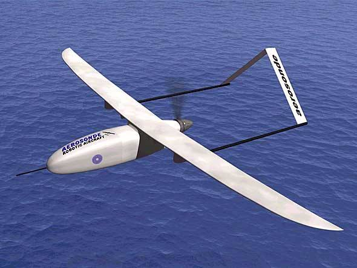
Eles monitoram o clima
Projetado para a coleta de dados meteorológicos, o Aerosonde é um drone australiano. Há 16 anos, a aeronave não-tripulada foi a primeira a cruzar o Atlântico – tendo voado por mais de 3.200 km entre o Canadá e a Escócia.
Eles são musicais
Nos EUA, a empresa KMel Robotics criou uma banda de drones para se apresentar num evento realizado em abril. Entre outras canções, os robôs voadores tocaram “Also sprach Zarathustra” – tema do filme “2001 – uma odisseia no espaço”.
Eles dançam bem
Outra criação da KMel Robotics é um vídeo no qual drones são usados como dançarinos numa bela coreografia. No balé inusitado, até as hélices entram na dança. Publicado no YouTube, o filme já foi acessado mais de 110 mil vezes pelos usuários da internet.
Eles são vítimas dos políticos
Aconteceu em Montana, nos EUA. Durante campanha eleitoral, o candidato republicano Matt Rosendale atirou num drone para expôr seu descontentamento com as medidas do governo de Barack Obama. Segundo Rosendale, Obama usaria drones para espionar os americanos.
Eles viabilizam o quadribol
O quadribol é um esporte com bolas voadoras praticado pelos personagens das histórias de Harry Potter. No mundo real, pesquisadores da Universidade de Tóquio criaram a HoverBall – um pequeno drone redondo que viabiliza o esporte.
Eles são chocantes
Desenvolvido pelo grupo Chaotic Moon Studios, o CUPID é um drone capaz de acertar alvos com descargas paralizantes de até 80 mil volts. Para isso, a aeronave usa dardos que servem para transmitir a corrente elétrica. Chocante.
Eles atrapalham aviões
Um vôo da American Airlines a caminho do aeroporto de Tallahassee, na Flórida, quase se chocou com um drone no último dia 22 de março. De acordo com a companhia aérea, a aeronave não-tripulada voava a 701 metros de altura.
Eles mostram o caminho
Engenheiros do MIT (sigla em inglês para Instituto de Tecnologia do Massachussets) criaram o Project SkyCall. Associado a um app, o drone ligado à iniciativa usa dados de GPS para indicar a direção desejada ao usuário que solicita os seus serviços.
Eles vigiam caçadores
A Peta, ONG ligada à defesa dos direitos dos animais criou um drone chamado “Air Angel”. Vendido pela organização, ele foi desenvolvido para uso por qualquer pessoa que quiser monitorar a ação de caçadores numa determinada região.
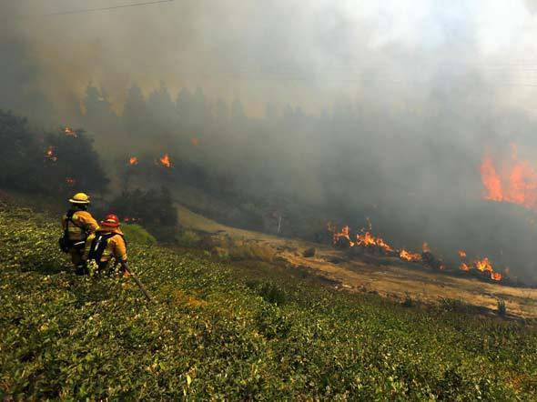
Eles evitam incêndios
Uma equipe de pesquisadores da Universidade de Queensland, na Austrália, desenvolveu robôs voadores que gravam condições atmosféricas em casos de incêndio em florestas. Com base nestes dados, é possível evitar que incidentes do tipo se repitam outra vez.
Eles protegem rinocerontes
A Ol Pejeta, organização sem fins lucrativos que atua no Quênia, vem usando drones para monitorar a ação de caçadores ilegais de rinocerantes e outros animais naquele país africano.
Eles monitoram elefantes
A WWF, ONG em defesa da conservação do meio ambiente, testou no ano passado o uso de drones para localizar elefantes na Namíbia. A ideia é usar esta informação para proteger os animais da ação de caçadores.
legal em ta dimais esses Drones